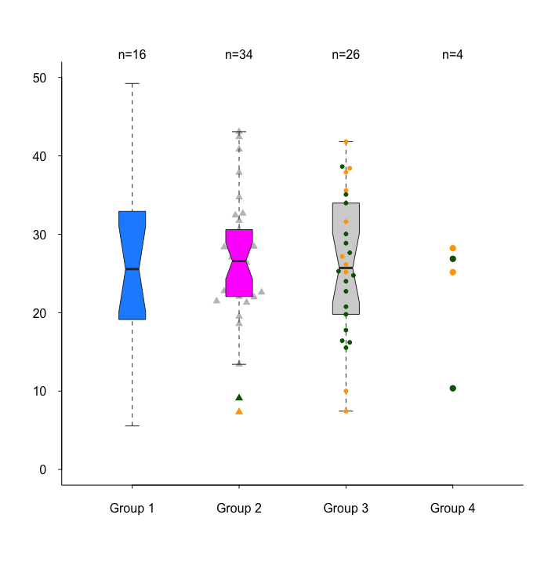

R Functions
Custom Figures
Download RFunctions1.R (GitHub)
-
tplot() is an alternative to boxplot(). It allows individual data points to be displayed, either in the foreground or background, with jittering if necessary.
Example
This example demonstrates the available options in tplot(). While it may not be the best way to visualize these particular data (due to excessive color variation), it showcases different customization features.
- col and pch can be specified at the individual level or group level. In this example, col is set for individual, and pch is assigned at the group level, which is unnecessary.
- type indicates b=box only, d=dots only, bd=box in front of dots, db=dots in front of box.
- Dots that are closer than dist are jittered by dist. Implementation of this functionality is questionable. Try different values.
- Box colors and box borders are controlled by boxcol and boxborder.
- The boxplot.pars argument is passed directly to boxplot().
R Code
set.seed(100) y <- rnorm(80, 26, 9) sex <- factor(sample(c('Female', 'Male'), 80, TRUE)) group <- paste('Group ', sample(1:4, 40, prob = c(2,5,4,1), replace = TRUE), sep='') d <- data.frame(y, sex, group) rm(y,sex,group) tplot(y ~ group, data=d, ylim=c(0,50), las=1, cex=1, cex.axis=1, bty='L', show.n=TRUE, dist=0.5, jit=0.07, type=c('b','bd','db','d'), group.pch=TRUE, pch=c(15,17,20,19), group.col=FALSE, col=c('orange','darkgreen')[c(sex)], boxcol=c('dodgerblue','magenta', 'lightgrey', 'pink'), boxborder=grey(0.2), boxplot.pars=list(notch=TRUE, boxwex=0.5) ) -
Description: Kaplan-Meier survival plot.
# Example usage in R kmplot(survival_data) -
Description: Joint modeling plot for longitudinal survival data.
# Example usage in R -
Description: Density and scatter plot combination.
# Example usage in R -
Description: Displays available color palettes.
# Example usage in R